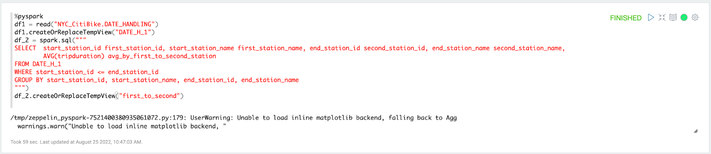
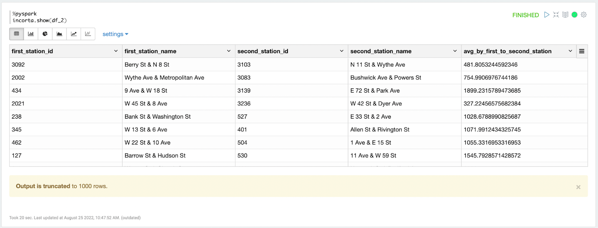
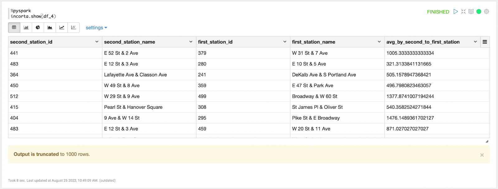
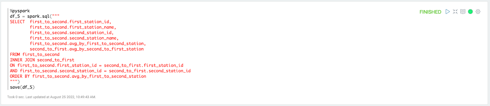
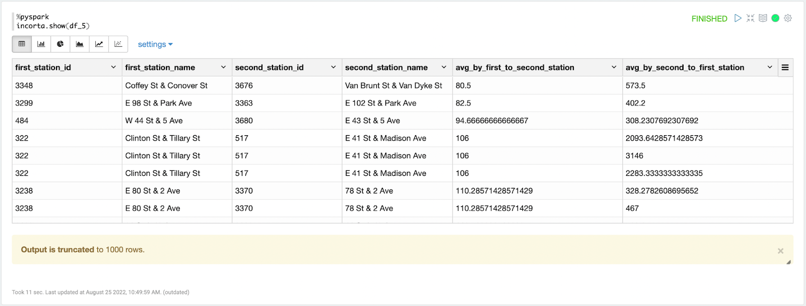

這個 Codelab 主要要介紹如何將已學會的 SQL code 應用在 PySpark 中，也會介紹兩個相對應的 function
Step 1
Schema → +New → Materialized View
Step 2
在語言的地方選擇 Spark Python
→ Edit in Notebook

讀取 schema 中的 table
Example
%pyspark
df1 = read("NYC_CitiBike.DATE_HANDLING")df.createOrReplaceTempView("name")
利用 df.createOrReplaceTempView 建立或是取代一個 local temporary view ，並命名為 name
Example
%pyspark
df1.createOrReplaceTempView("DATE_H_VIEW")之所以要建立成檢視表，是因為在後面 spark.sql 中可以使用，如同 SQL 中的 table，但 Temp View 僅僅是暫時的，運算完 spark.sql 後還是要存成 data frame
運算過後的檢視表儲存成的 data frame 也可以再建立成另一個新的檢視表，再做 spark.sql 運算
此步驟可以重複很多次，有點類似 SQL 中的 nested query ，可以成為連續的網絡 nested structure，一個接著一個
Example
這個例子就是運用建立多次的 Temp View 在 spark.sql() 中完成 JOIN 運算
此運算的結果是將兩個 view 結合起來，查看租借自行車的人，從A站到B站的平均使用時間，和從B站到A站的平均使用時間，是多長時間，是否有差異，進而進行分析
%pyspark
df1 = read("NYC_CitiBike.DATE_HANDLING")
df1.createOrReplaceTempView("DATE_H_1")
df_2 = spark.sql("""
SELECT start_station_id first_station_id, start_station_name first_station_name, end_station_id second_station_id, end_station_name second_station_name,
AVG(tripduration) avg_by_first_to_second_station
FROM DATE_H_1
WHERE start_station_id <= end_station_id
GROUP BY start_station_id, start_station_name, end_station_id, end_station_name
""")
df_2.createOrReplaceTempView("first_to_second")
incorta.show(df_2)%pyspark
df3 = read("NYC_CitiBike.DATE_HANDLING")
df3.createOrReplaceTempView("DATE_H_2")
df_4 = spark.sql("""
SELECT start_station_id second_station_id, start_station_name second_station_name, end_station_id first_station_id, end_station_name first_station_name,
AVG(tripduration) avg_by_second_to_first_station
FROM DATE_H_2
WHERE start_station_id > end_station_id
GROUP BY start_station_id, start_station_name, end_station_id, end_station_name
""")
df_4.createOrReplaceTempView("second_to_first")
incorta.show(df_4)%pyspark
df_5 = spark.sql("""
SELECT first_to_second.first_station_id,
first_to_second.first_station_name,
first_to_second.second_station_id,
first_to_second.second_station_name,
first_to_second.avg_by_first_to_second_station,
second_to_first.avg_by_second_to_first_station
FROM first_to_second
INNER JOIN second_to_first
ON first_to_second.first_station_id = second_to_first.first_station_id
AND first_to_second.second_station_id = second_to_first.second_station_id
ORDER BY first_to_second.avg_by_first_to_second_station
""")
save(df_5)
incorta.show(df_5)





spark.sql("""
SELECT .. FROM view
""")
要用 PySpark 寫 SQL 時，要用 spark.sql 指令，雙引號內即可寫 SQL code
創建另一個新的 df
Example
%pyspark
df_2 = spark.sql("""
SELECT start_station_id first_station_id, start_station_name first_station_name, end_station_id second_station_id, end_station_name second_station_name,
AVG(tripduration) avg_by_first_to_second_station
FROM DATE_H_1
WHERE start_station_id <= end_station_id
GROUP BY start_station_id, start_station_name, end_station_id, end_station_name
""")為什麼要這樣做呢？
我們之所以要利用 pyspark 來做 SQL 運算是因為，若是先學習如何使用SQL做資料處理的話，有些人比較習慣 SQL 的思考邏輯，因此喜歡用 SQL 來做，但是用spark.sql又可以利用一些pyspark 的功能做其他的運算，因此用 spark.sql
incorta.show(df)
可以使用此指令來用 incorta 來顯示 data frame 的結果
Example
%pyspark
incorta.show(df_2)df.columns
可以查看 data 的 column names
Example
df_2.columnsdf.filter("條件")
相當於 SQL 中的 WHERE，根據所給條件篩選需要的 data
Example
df_2 = df_2.filter("first_station_id = second_station_id")df.count()
可以用在計算資料的筆數
Example
%pyspark
df_5.count()
save(df)
每當寫完 pyspark code 時，必須要用 save(df) 指令儲存結果
Example
save(df_2)
當要儲存時若出現此錯誤，首先要先檢查 notebook 內是否有錯誤，重新 run 一次是否都可以成功跑出結果，第二個要檢查需要儲存的 paragraph 的 綠色勾勾✅是否都有勾起來，若是檢查沒問題，run 也沒問題，那就要在 notebook 外面的 Properties 加上 spark.dataframe.sampling.enabled = false ，步驟如下圖所示：